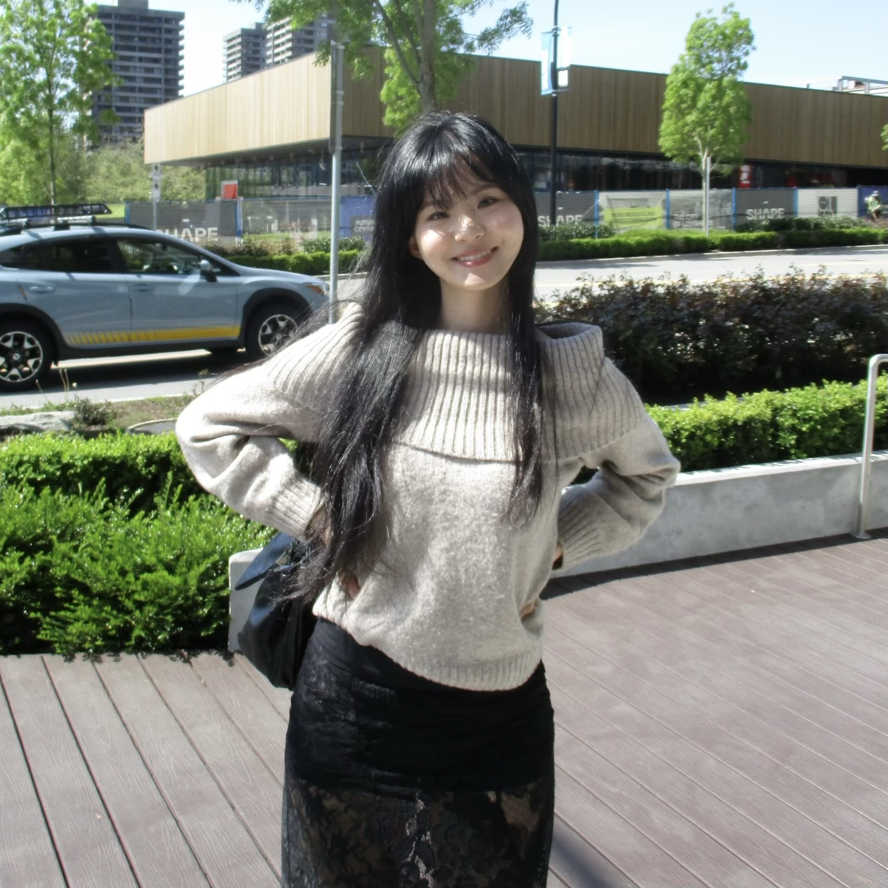

I'm Dawon. I came to 3D from a traditional art background.
What drew me in was the idea of taking 2D visual language and translating it into a fully dimensional space
and I've been exploring that ever since.
 I studied at Emily Carr University of Art + Design,
where I built a foundation in the technical side of 3D and current industry pipelines.
My focus has settled on texturing, lighting, and compositing ever since I discovered that colour, tone,
and mood could merge with technical craft into something that actually feels like a story.
I studied at Emily Carr University of Art + Design,
where I built a foundation in the technical side of 3D and current industry pipelines.
My focus has settled on texturing, lighting, and compositing ever since I discovered that colour, tone,
and mood could merge with technical craft into something that actually feels like a story.
Let’s connect! I would love to hear about you and your work!